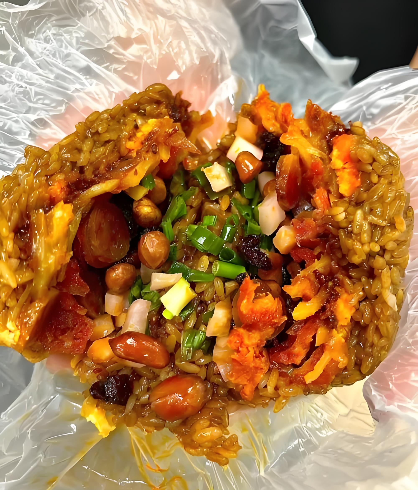

民族原生态，锦绣黔东南
自然景观
喀斯特峡谷
舞阳河（镇远）
喀斯特峡谷，碧水 +"孔雀开屏" 象形石，游船体验佳
喀斯特峡谷
孔雀开屏
游船观光
建议游览时间：半天
镇远县舞阳河景区
生态梯田
肇兴梯田
侗寨旁生态梯田，春插秧 / 秋金黄，与吊脚楼相映成画
生态梯田
侗寨风光
四季变化
建议游览时间：1天
黎平县肇兴镇
人文风景
世界最大苗寨
西江千户苗寨
世界最大苗寨，吊脚楼群 + 千户灯景 + 苗族歌舞
千户苗寨
吊脚楼群
苗族歌舞
建议游览时间：1-2天
雷山县西江镇
明清山水城
镇远古城
明清山水城，舞阳河穿城 + 青龙洞古建筑群
古城风貌
青龙洞
夜景迷人
建议游览时间：1天
镇远县城区
中国最美侗寨
肇兴侗寨
"中国最美侗寨"，5 座鼓楼 + 侗族大歌表演
五座鼓楼
侗族大歌
民族文化
建议游览时间：1天
黎平县肇兴镇
美食推荐
凯里酸汤鱼
木姜子酸汤煮稻田鱼，配苗家糊辣椒蘸水
价格：58-88元/份

糯米饭团
腊肉 / 香肠 + 折耳根拌糯米饭，便携管饱
价格：6-10元/个
侗族腌鱼
稻田鱼发酵，酸香浓郁
价格：25-35元/份
交通出行
凯里南站为起点
到西江苗寨
景区直通车（8:00-18:00，约 1 小时）
或 16 路转苗寨专线（约 1.2 小时）
到镇远古城
凯里南→镇远站（高铁 30 分钟）
转公交 1 路（约 10 分钟）
到肇兴侗寨
凯里南→从江站（高铁 1 小时）
转景区直通车（约 20 分钟）